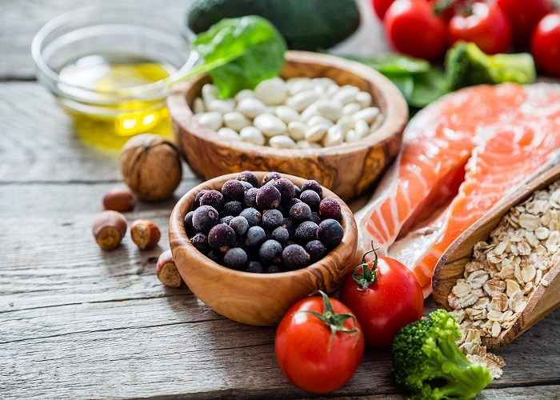
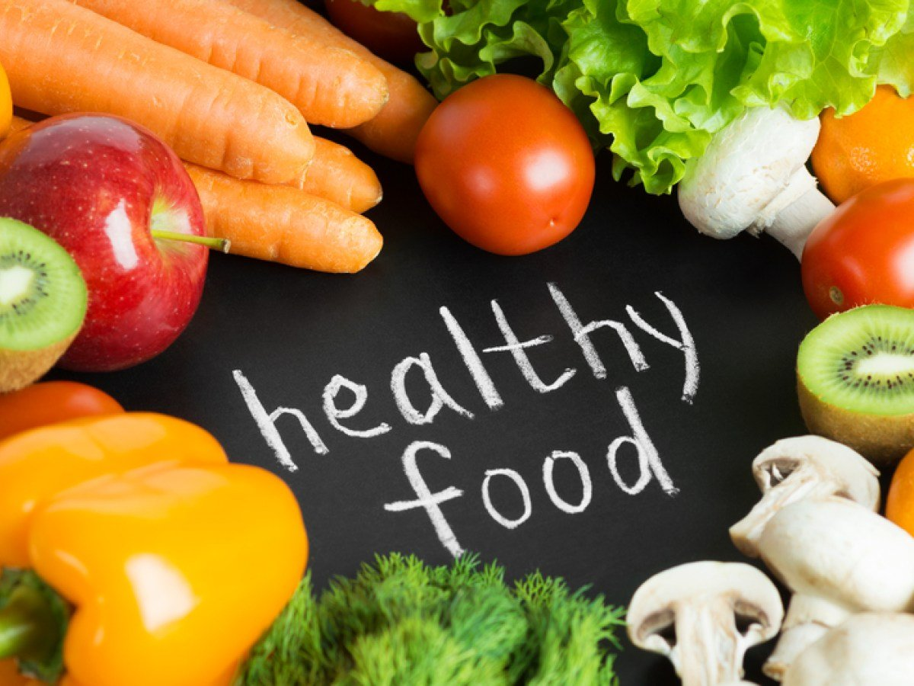
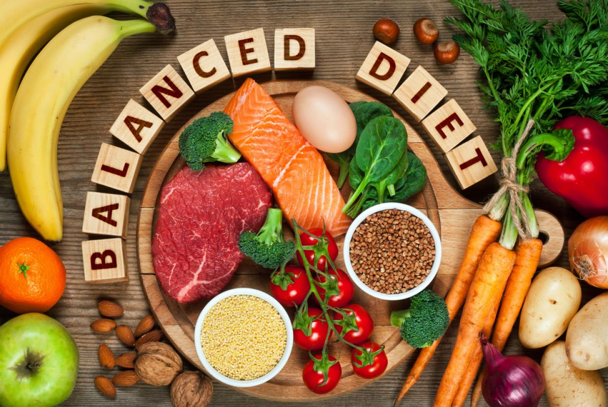

affects Diet the energy and proper functioning of the body , and eating healthy,
balanced food that contains all nutrients is important to maintain good health.
Healthy food is balanced and varied food that contains all the essential nutrients that
the body needs. Healthy food includes the six food groups, which include:

Proteins.
Carbohydrates.
Fats.
Vitamins and major minerals.
water.
Healthy food , vegetables and fruits
Healthy foods that include vegetables and fruits are an important source of vitamins and minerals. They
are also rich in fiber, potassium, and antioxidants that help prevent chronic diseases. It is
recommended to eat five servings of vegetables and fruits daily to provide the body with what it needs.
The types of vegetables and fruits in meals must be diversified. Because each different type gives the
body different nutrients.

estimated One share as follows:
Half a cupOf cooked vegetables.
Half a cup From cooked, canned or dried legumes such as lentils,
beans, or peas.
cup Of vegetable salad.
Half a cup From corn.
Half a pill Medium potatoes, or starchy vegetables such as sweet
potatoes.
grainMedium tomato.
one piece Medium-sized fruits such as apples, bananas, and oranges.
Two pills Small fruits such as apricots, peaches, and kiwi.
One cup Of canned or cut fruit without sugar.
One cup From sugar-free fruit juice.
Vegetables and fruits have many benefits including:
Vegetables and legumes such as lentils, beans, and artichokes contain fiber, which helps prevent
heart disease.
Healthy food that contains vegetables such as black beans, cooked spinach, and asparagus is rich
in folic acid, which reduces the risk of having a child with brain and spinal cord deformities.
Potassium-rich vegetables, such as sweet potatoes, tomatoes, beets, white beans, boiled leafy
vegetables, and white potatoes, help maintain a normal level of blood pressure.
Fruits are an excellent source of vitamins, especially vitamin C, minerals and antioxidants that
help prevent chronic diseases and heart disease.
Healthy food and dairy derivatives
Healthy food containing dairy derivatives provides the body with calcium and proteins. It is preferable
to choose low-fat or fat-free types. It is recommended to eat three servings of dairy derivatives daily,
and one serving is estimated as follows:
cup(250 milliliters) of liquid milk, or made from milk powder.
Half a cup(120 milliliters) of unsweetened condensed milk.
Two slices (40 grams) of hard cheese such as cheddar..
Half a cup Of ricotta cheese.
Three quarters of a cup Or a small carton (200 grams) of yogurt.
cup(250 milliliters) of soy, rice, or almond milk fortified with
calcium
Dairy derivatives are very important when following a healthy diet because of their
many benefits, such as:
Supports bone health and protects against osteoporosis.
Reduces the risk of heart disease, high blood pressure, and diabetes.
Vitamin D found in dairy derivatives helps maintain calcium and phosphorus levels in the body.
Dairy derivatives are the main source of calcium and vitamin D, and include milk and yogurt of
all kinds. It is recommended to choose low-fat products to dispense with excess fat.
The healthy way to prepare healthy food
Healthy food must be prepared in healthy ways, such as grilling or boiling, rather than frying
in oxidized oil, and must be prepared from fresh, well-washed materials.
Healthy food is usually rich in fibre, vitamins and minerals, and low in salt, sugar,
preservatives and colourings.
Healthy eating plays a role in maintaining a healthy body, energy levels, and a good
psychological state, in addition to preventing chronic diseases and cancers.
Different types of healthy foods must be eaten in quantities that suit the body’s need to
obtain all nutrients. Because each different type of food provides the body with different
elements.
Tips for a healthy diet
Healthy eating is a balanced lifestyle. It is not limited to eating a specific type of food, but rather
it is a healthy lifestyle for life. Healthy eating is smart food choices from each
group of food, so that they are diverse, balanced, and rich in all essential elements.

Some tips when following the Healthy Food System:
Eat the healthy amount of calories that suits the person and his
daily activities.
Eat different and varied healthy foods; To ensure obtaining all the
necessary nutrients for the body.
Approximately one-third of the meal should contain carbohydrates,
such as bread, rice, pasta, cereals, and potatoes. It is preferable to choose whole grains or
brown rice. To get fiber.
Eat plenty of vegetables and fruits.
Reduce your intake of saturated fats and sugar.
Reduce the amount of salt in food.
Doing exercise.
Drink enough water.
Eat fish twice a week, and choose one serving of fatty fish
containing omega-3 , and from fatty fish: